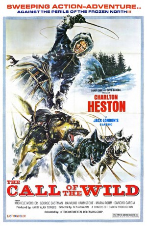

#10307 Ruf der Wildnis
Alternativ: The Call of the Wild (Englischer Titel)
 
 IMDB-Wertung: 5.9 / 10
IMDB-Wertung: 5.9 / 10  Metascore: 0
Metascore: 0 
Alaska im Jahre 1900: Der Goldrausch hat den gesamten Kontinent ergriffen und fest in seinen Klauen. Zehntausende strömen in die unwirtliche Gegend, um ihr Glück und vor allem endlosen Reichtum zu finden. Um in den endlosen Gebieten weißer Hölle am besten durch den Schnee zu kommen, sind Schlittenhunde das schnellste Fortbewegungsmittel und gute Hunde sind heiß begehrt und wertvoll. Zum Leidwesen von Schäferhund “Buck” – der robuste Mischling wird aus seinem kalifornischen Heim gestohlen und an die beiden Postfahrer John Thornton und Pete Smith verkauft. In ihren Diensten muss er sich gegen andere Hunde und die Wildnis behaupten.
Jahr: 1972
Dauer: 102 Minuten
FSK: 6
Land: England Studio: Constantin FilmTonspuren:
Untertitel:
Auflösung: 1080p (1464x1080) Größe: 8622 MB
Genre: Abenteuer, Familie
Regisseur: Ken Annakin
Drehbuch: Federico De Urrutia, Hubert Frank, Jack London, Tíbor Reves, Harry Alan Towers
Soundtrack: Carlo Rustichelli
Darsteller:
 Charlton Heston als John Thornton
Charlton Heston als John Thornton Michèle Mercier als Calliope Laurent
Michèle Mercier als Calliope Laurent- George Eastman als Black Burton
- Maria Rohm als Mercedes
- Juan Luis Galiardo als Seze
 Sancho Gracia als Taglish Charlie
Sancho Gracia als Taglish Charlie Rik Battaglia als Dutch Harry
Rik Battaglia als Dutch Harry- Alfredo Mayo als Judge Miller
- Dan Fosse als Old Miner
- Antonio Mayans als Jack
 Luis Barboo als (uncredited)
Luis Barboo als (uncredited)- Raimund Harmstorf als Pete
- Friedhelm Lehmann als Charles
- Horst Heuck als Hal
- Alf Malland als Constantine
- Sverre Wilberg als Colonel
- Olov Pedersen als Red Sweater
- Per Amvik als François
- Torbjørn Halvorsen als Perrault
- Hans Stormoen als Master of Ceremonies
- Kåre Siem als Piano Player
- Roy Bjørnstad als Storeman
- Ola B. Johannessen als Con Man
- Per Tofte als Runner
- Jennifer Roberts als Mollie
- Jody Hanson als Alice
- Buck als Buck
- Charly Bravo als (uncredited)
Datei: X:\1972\Ruf der Wildnis (1972, FSK6, 1464x1080).mkv seit 29.12.2018
Festplatte: HD 1971-1979
 Es gibt insgesamt 26 Filme in der Gruppe '1972'
Es gibt insgesamt 26 Filme in der Gruppe '1972'